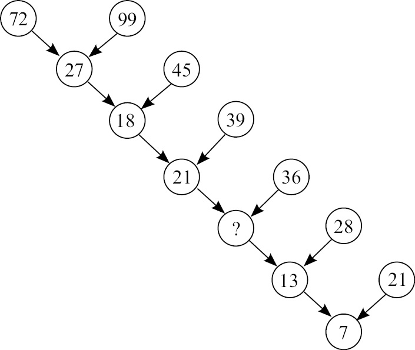
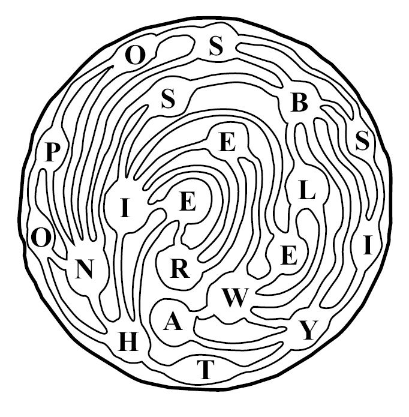

前言
我要介绍的所有问题都始于谢莉尔。
这个女孩远算不上天真或单纯，反而常常令人头疼不已。
但是，我总会情不自禁地想到她，因为她改变了我的人生历程。
我要澄清一下，谢莉尔并不是一个真实的人，而是新加坡数学考试题中的主角。但正是因为谢莉尔激发了我的想象力，引导我去探索各种各样的趣味问题，本书才有机会与广大读者见面。
接下来，你会遇到谢莉尔的生日问题，也会了解我和她之间发生的所有故事。但是，在正式欣赏我最喜爱的有趣的数学题之前，我们先做两道题暖暖身。
请先看下图。找出图中数字的排列规则，在“？”处填上缺失的数字。注意，最后一个圆圈中的数字7是正确的。

这个问题太有意思了，简直让人欲罢不能。而且，解答这道题不需要我们具备高等数学知识。面对这样的挑战，你肯定想一试身手。等你解开这道题（如果你真的会解）时，那种满足感一定会让你异常兴奋，大呼过瘾。20世纪日本著名趣味问题发明家芦原伸之（Nob Yoshigahara）认为这道题是他最优秀的作品。我将在前言的结尾公布它的正确答案，希望大家在看答案之前先自己试着解答一下。
第二道题叫“火星上的运河”。下面这幅地图标出了这颗红色星球上新发现的城市和河流。请大家从最南端的T城市开始，沿着运河访问所有城市，但每个城市只能去一次。在回到起点之时，所经城市的名字可以连成一个英语句子吗？

这道题是由多产的美国趣味问题发明家萨姆·劳埃德（Sam Loyd）在100多年前设计的。劳埃德称：“当这个趣味问题第一次刊载在杂志上时，超过5万名读者说，‘根本不可能完成’。”但其实这道题非常简单。如果你不亲自动手，而是选择直接看答案，你肯定会后悔的。
* * *
如果你愿意认真思考这两个问题，那么不用我多做解释，你就会发现它们都非常有趣，你会沉醉其中不能自拔。一旦开始专心致志地解题，你就会无暇分心去考虑其他事。使人开动脑筋的问题具有催人向上的效果。由于现实生活屡屡违背逻辑，所以利用简单的逻辑步骤完成演绎推理是一件特别惬意的事。好的趣味问题不会设置遥不可及的目标，当你达成这些目标时，你会拥有一种无与伦比的满足感。
与谢莉尔邂逅之后，我在《卫报》上开设了一个在线趣味问题专栏。为了确保质量，我查阅了大量图书，还与专业及业余的趣味问题设计人员建立了联系。我一直喜欢数学类的趣味问题，但在开始为本书收集资料之前，我对它们的多样性、概念深度和悠久历史并不是非常了解。例如，我不知道1 000多年前数学的主要作用（除了统计、测量等枯燥的商业任务以外）是为人们提供带有益智性质的消遣和娱乐。（可以说，这句话在今天仍然是正确的，因为数独爱好者在人数上远超专业数学家。）趣味问题谱写了一部数学的平行历史，我们从中可以看到伟大发现的影子，即使头脑最聪敏的人，也可以获得启发。
本书收集并整理了过去2 000年来的125道趣味问题，讲述了它们的起源和影响。我挑选的都是我认为最吸引人、最有趣且发人深思的问题。它们只能算广义上的数学题，解题时不需要具备高等数学知识，但是需要运用逻辑思维进行推理。这些问题分别来自不同的时代和不同的地方，包括古代中国、中世纪欧洲、维多利亚时期的英国和现代日本。有的是传统难题，有的是当时顶尖的专业数学家精心设计的问题。然而，某一道问题到底从何而来有时很难说清楚。就像笑话和民间故事一样，这些问题也随着一代代人的修饰、调整、简化、扩展和重新设计而不断发展演变。
优秀的趣味问题往往像精简的诗句一样，简洁雅致的语言风格总是可以激起我们的兴趣，激发我们的好胜心，考验我们的创造力，在某些情况下还可以揭示普遍真理。好的趣味问题不需要用到专业知识，而是更关注创造性、机敏以及清晰的思维。趣味问题之所以迷人，是因为它们可以激发人类探索世界奥秘的冲动；它们之所以能给我们带来快乐，是因为它们把世界的某个奥秘展现在我们眼前。然而，不论趣味问题是否具有实际意义，设计的痕迹是否过于明显，我们的解题策略都有助于我们更加轻松自如地应对生活中的其他难题。
然而，趣味问题最重要的好处是寓教于乐，使我们尽情享受智力游戏带来的乐趣。这些问题非常有趣，因为它们反映了孩童般的好奇心。我在选择趣味问题时尽可能地挑选不同的风格，这就要求我们在解题时要使用不同的方法。有的题目需要我们灵光一现，有的需要我们依直觉行事，还有一些——现在还不能说得太详细。
本书的每一章都围绕一个主题，每章中的问题大致按照出现时间顺序排列，而不是按难易程度排序，因为难易程度通常很难判断。同一道题，有的人觉得难于上青天，有的人却觉得小菜一碟。有的问题我给出了解法，有的问题我进行了提示，还有一些问题需要读者自己动手动脑解决（答案附在书的后面）。有的问题很简单，有的则会让你挠头好几天，这些难题我都用符号“”标示出来了。如果你真的无法解决，可以参考书后给出的答案，我希望你会认为这些解法和问题本身一样有趣。学会或者了解了新的技巧、想法或者结果后，有时会让人感到无比激动。
在每一章开始之前，我都会给出10道速答题，目的是让你调整好状态。第1章、第3章和第5章的10个问题难度较大，所有问题都选自英国大不列颠数学协会针对11~13岁学生的数学竞赛。对，它们都是针对孩子的问题。试试看你会不会做吧！
现在，让我们回过头讨论本部分开头的两个问题。
在看到“数字树”时，你的视线肯定会落在左上方。怎样才能由72和99得到27呢？
有了！99 – 72 = 27。
也就是说，把两个箭头尾端圆圈中的数字相减，就得到了箭头所指圆圈中的数字。
下一个圆圈中的数字18也符合这个规律：
45 – 27 = 18
数字21也符合这个规律：
39 – 18 = 21
由此可见，缺失的那个数字肯定是21与36的差，也就是
36 – 21 = 15
保险起见，我们沿着树形图接着往下看：
28 – 15 = 13
太棒了！规则仍然有效，马上就要大功告成了。
但就在这时，意外出现了！
最后一个数字是7，指向它的两个箭头尾端圆圈中的数字分别是13和21，而7并不是13和21的差。
这下可糟糕了！我们最初的假设不成立了。圆圈中的数字并不等于指向它的两个箭头尾端圆圈中的数字之差。芦原伸之巧妙地引领着我们走在花园的小径上，直到最后一步我们才发现自己走错路了。
现在，让我们回到起点，也就是第一个圆圈的位置。由72和99得到27，还有别的办法吗？
答案简单得出乎你的意料！
7 + 2 + 9 + 9 = 27
把所有数位上的数字相加即可。
下一个数字也满足这个规律：
2 + 7 + 4 + 5 = 18
接下来的数字同样如此。因此，缺失的数字肯定是：
2 + 1 + 3 + 6 = 12
最后两个数字同样没有任何问题：
1 + 2 + 2 + 8 = 13
1 + 3 + 2 + 1 = 7
这道趣味问题设计得非常巧妙，因为芦原伸之发现有两条算术规则可以在整个序列中的5个环节得到相同的答案，但其中一条规则在最后一个环节出现了问题，所以只有一条规则是正确的。神奇的是，这道题毫不费力就让我们走上了错误的方向。在很多时候，我们觉得某道题很难，并非因为它是一道“难题”，而是因为我们走上了一条错误的道路。切记！
“火星上的运河”这道题你解开了没有？你可以按照“There is no possible way”（根本走不出去）这个句子走完全程。这道题告诉我们，阅读一定要仔细！
接下来，让我们一试身手吧。